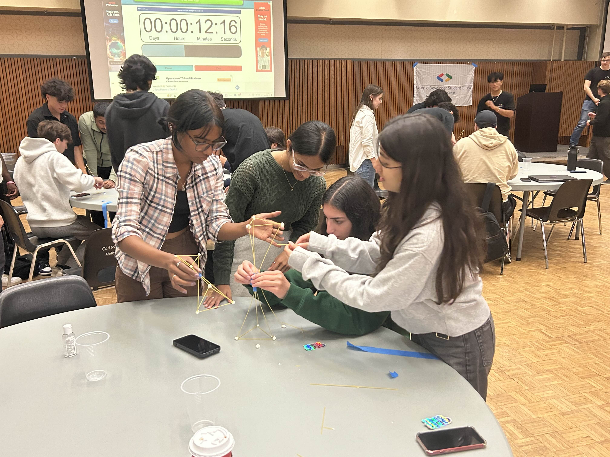
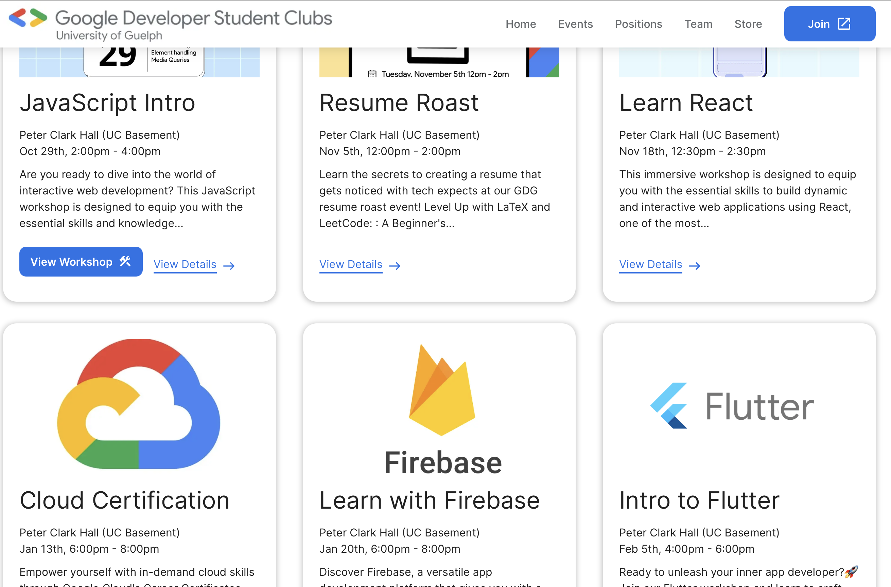
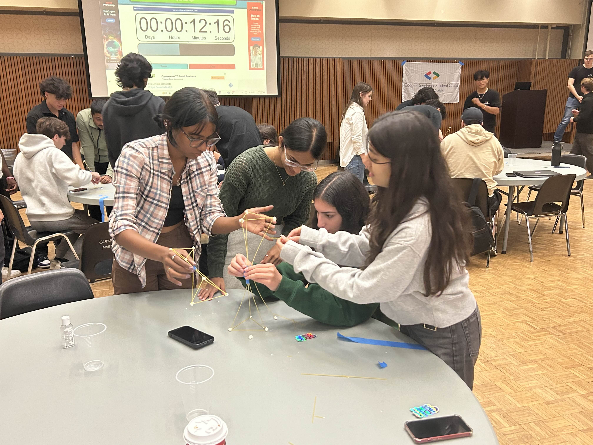
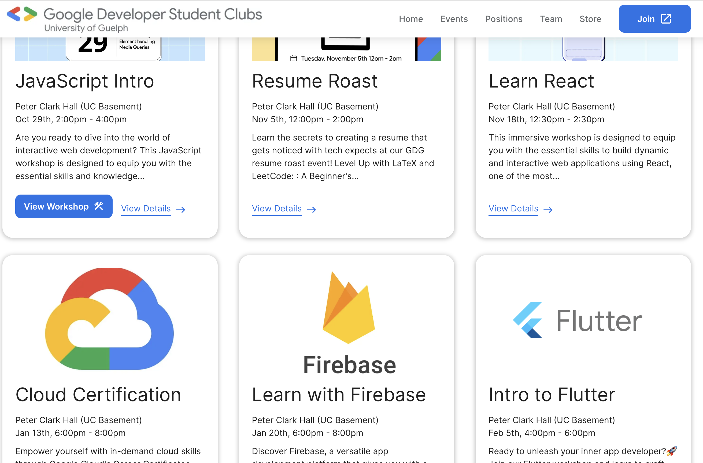

Google Developer Student Club
Marketing Director
 



My term as Marketing Director at GDSC Guelph was an incredibly rewarding experience. I managed a marketing team of 4 Digital Designers and chaired weekly meetings where I assigned action items, coordinated campaign timelines, and kept communication flowing between our design, tech, and events teams.
I created marketing campaigns tailored to our student audience, resulting in an average turnout of 80–120 students per event, often exceeding expectations. This was done through a combination of lecture hall visits to pitch the event a large volume of students (as shown in slide 1 of the carousel), all the way to emailing the undergrad computing chain. I marketed workshops on tools like React, Flutter, and Firebase, which helped bridge the gap between the curriculum and real-world technical skills. I also analyzed our marketing metrics to track campaign performance and used those insights to make data-driven decisions that improved reach and engagement.
Beyond strategy, I was also super hands-on: I directed post designs to match the visual identity of our feed, gathered event content, snapped photos at sessions, and even made silly short-form reels to keep things fun and relatable. Feel free to check them out on our Instagram (@GDSC_Guelph)! At our peak, we hit over 40K Instagram profile views, and the follower count doubled by the end of my term.
Best of all, I became close friends with my team :) we collaborated effectively but also laughed a ton. It was one of the most fulfilling and memorable leadership roles I’ve taken on.